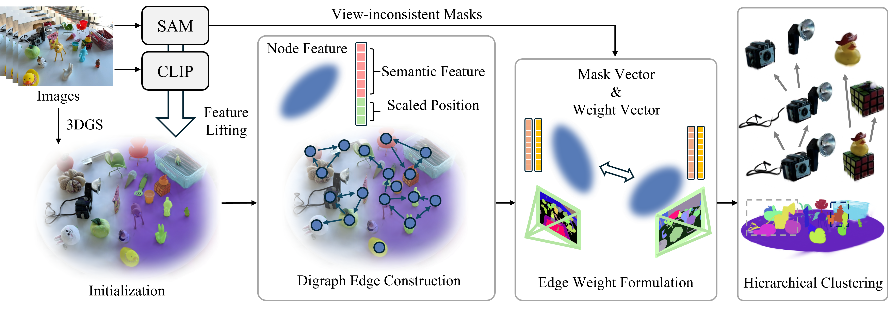

Lift Semantics
PairGS starts from a pretrained 3DGS scene and initializes Gaussian features by lifting SAM-masked CLIP features from multi-view images.
Relation-Centric Open-Vocabulary 3D Gaussian Segmentation

Open-vocabulary 3D Gaussian segmentation is challenging because it requires language understanding for diverse queries and accurate separation of Gaussians along object boundaries. Prior approaches either embed language knowledge into individual Gaussians to improve query responsiveness or optimize per-Gaussian instance features to encode object identity. However, these strategies may produce noisy Gaussian segmentations or rely on cost-inefficient per-scene optimization.
We propose PairGS, a framework that reframes Gaussian segmentation as modeling pairwise relations between Gaussians. 3D Gaussian representations provide rich signals for relation estimation, such as view contribution weights and multi-view mask evidence. By leveraging these cues, PairGS explicitly constructs a relation graph for segmentation without a heavy optimization process.
PairGS first proposes sparse edge candidates using low-dimensional descriptors, computes precise pairwise affinities only on those candidates, and builds a hierarchical cluster tree for multi-granular querying. It achieves state-of-the-art results on open-vocabulary 3D Gaussian segmentation benchmarks, while the fast variant is 50x faster than optimization-based instance-feature approaches.

PairGS starts from a pretrained 3DGS scene and initializes Gaussian features by lifting SAM-masked CLIP features from multi-view images.
Lightweight semantic descriptors and scaled Gaussian positions form node descriptors for k-NN edge candidate proposal.
Multi-view mask evidence and Gaussian view contribution weights produce precise relation scores on the sparse graph.
TreeDBSCAN constructs a parent-child-aware hierarchy, pruning redundant and spurious clusters for multi-granular selection.
Open-vocabulary 3D segmentation results on indoor scenes.
Open-vocabulary segmentation result on an outdoor driving scene.
Application
Language-selected 3D Gaussians are converted into a point cloud for downstream grasp generation.
@article{cha2026relation,
title={Relation-Centric Open-Vocabulary 3D Gaussian Segmentation},
author={Cha, Eunsung and Lee, Hyunjoon and Park, Jaesik},
journal={arXiv preprint arXiv:2607.01140},
year={2026}
}